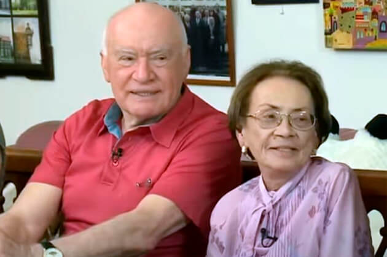

-

¡Soy una súper abuela!
Por culpa del dolor de rodillas y espalda apenas podía caminar. Las pastillas, inyecciones e intervenciones no me hicieron efecto. Todo lo contrario: me quitaron dinero y energía. No sabía qué hacer. Por suerte me enteré de esta crema. Dado que este descubrimiento fue realizado por un científico famoso, no tenía ninguna duda de que me ayudarían. ¡Y aquí está el resultado! Me sentí mejor desde el primer uso. Después de un mes me siento joven y llena de energía. Doy paseos largos y cuido del jardín que he plantado con mi nieta. El dolor ha caído en el olvido. ¡Gracias!
-

Fácil y eficaz
Es difícil de creer que un método tan sencillo haga tales milagros. Simplemente, usas la crema y poco tiempo después recuperas la movilidad. Increíble. Ya lo han probado mis hermanas, mis primas y yo. ¡Se lo recomiendo a todo el mundo! En efecto, es el fin a las dolencias de articulaciones
-

Me siento necesitado por mi familia
Años de trabajo duro en la fábrica arruinaron mis articulaciones. Les prometí en varias ocasiones a mis nietos que jugaría con ellos al futbol o iríamos juntos en bici, pero después lo cancelaba a causa del dolor. Los niños no comprenden estas cosas y se enfadan. Me sentía inútil. Hasta que mi hija me regaló esta crema Fortuflex. ¡Fue perfecto! Sentí la diferencia inmediatamente. ¡Ha pasado 1 mes desde que las tomo y me siento indestructible! Puedo correr y andar en bicicleta sin problemas. He vuelto a pasar el tiempo con mi familia al aire libre tal y como lo hacíamos antes.
-

Recuperé la vida
El sobrepeso y el trabajo de pie destrozaron mis rodillas: soy peluquera. No podía soportar el dolor, así que tomaba más de 10 pastillas al día, pero me daban sueño y yo ganaba peso. Por suerte un compañero de trabajo me recomendó esta increíble crema. Resultó ser la solución perfecta. El dolor desapareció como por arte de magia y he recuperado la pasión por la peluquería. He recuperado la salud, lo que me ha permitido empezar a entrenar y... ¡He adelgazado 10 kilos!
Un cambio increíble. -

Mi esposa ha dejado de quejarse
En casa mi esposa siempre me encuentra algo que hacer: arreglar el grifo, montar un armario o pintar. Y me resulta difícil hacer este tipo de trabajo, me duele mucho la espalda, ¡no puedo agacharme ni sentarme! Los codos y las rodillas también son problemáticos. Por suerte la crema Fortuflex hizo que recuperara la salud de la columna y me permitió fortalecer las articulaciones. Sentí como si hubiera perdido el peso que había estado cargando durante años. ¡Mi esposa dejó de quejarse de que no le quiera ayudar en casa!
-
Volví a trabajar
¿Podéis imaginar lo que es perder la movilidad en una mano? Eso es lo que me pasó a mí: tenía dolor en los dedos, las manos hinchaban y temblaban. Soy joyero, lo que hago es mi trabajo y mi pasión. Cada vez más tuve que cerrar mi pequeño taller, y por ello mi familia tuvo que limitarse mucho en todo. Empecé a buscar métodos para reparar las articulaciones y en todos los sitios decían que el mejor es este producto Fortuflex. Lo probé, aunque tenía poca fe en ello, pero después de 30 días tenía las manos más sanas que hace 10 años. . ¡Pude volver a trabajar!
-
Una nueva vida a un precio tan bajo
Normalmente, si algo es eficaz tiene que ser caro. Este era el caso de mi masajista personal, a la que pagaba casi un tercio de mi sueldo y esperaba que hiciera un "milagro". Pero no se merece el dinero, y las articulaciones y la columna me dolían aún más. Cuando mi cuñado me dijo que probara Fortuflex, me pareció una pendejada. ¿Cómo iba a ayudarme una crema cuando un masajista supuestamente fenomenal no me pudo ayudar? Deberían haber visto mi cara cuando los dolores desaparecieron. ¡Un milagro!
-
El único método eficaz
Probé diferentes métodos para deshacerme del crujido y el dolor de cadera. Nada funcionaba. Por si fuera poco, la degeneración se extendió a mi columna vertebral. Con Fortuflex ocurrió todo lo contrario. ¡Ya no me preocupo por mi salud porque estoy
sana al 100%!
Un curso de terapia y ¡puedes olvidarte del dolor de las articulaciones y la columna vertebral! ¡Los especialistas lo recomiendan!
Hola,
Soy Luis Recio, científico y especialista en biología molecular. En esta página quiero presentarte el mayor logro de mi vida, por el cual fue nominado para el Premio Nobel. Desarrollé un método gracias al que cualquiera puede eliminar el dolor, así como recuperar las articulaciones y la columna y, al mismo tiempo, recuperar la movilidad en un solo curso de aplicación.
Es posible sin productos químicos:
- aliviar el dolor de las articulaciones y la columna – sentir alivio;
- recuperar y fortalecer las articulaciones, los tendones, los músculos y la columna el 87% para que funcionen como nuevos;
- recuperar la salud física y no tener miedo a quedar incapacitado;
- eliminar el entumecimiento de las articulaciones y la columna, recuperar el confort y la fluidez de movimientos;
- proteger las articulaciones y la columna frente al desgaste y conservar la salud física durante años;
- eliminar la degeneración, la inflamación y los edemas – reducir el dolor y restablecer la comodidad del movimiento;
- regenerar el organismo tras fracturas, esguinces y lesiones;
- y gracias a ello, ¡tener 3 veces más de energía y volver a disfrutar de la vida!
Debes saber que puedes lograr todo esto sin operaciones peligrosas, remedios costosos, esperando indefinidamente en la cola para ver a especialistas (que además se rinden sin poder hacer nada...) y sin tomar productos poco saludables (perjudicial para el hígado, el estómago y los riñones)... y finalmente ahorrar mucho dinero. Si quieres hacerlo, debes leer lo que tengo que decirte.
Da igual la edad que tengas y el tiempo que lleves sufriendo por el dolor de articulaciones o de columna. Es irrelevante que las articulaciones crujan desde hace 2 días o 20 años. Incluso si tu especialista te ha dicho que tus articulaciones y tu columna están totalmente destruidas y has perdido toda la esperanza de vivir con normalidad... Debes saber que existe un remedio que puede ayudarte a recuperar la movilidad en un solo curso de terapia. ¡Sin dolor!
Mira por qué mi método es una alternativa para otros métodos de afrontar el dolor de articulaciones:
- ayuda a aliviar el dolor casi inmediatamente después de la aplicación, y puedes olvidarte de los problemas de articulaciones después de un curso de uso;
- es seguro para el organismo: la fórmula macro-molecular es un complejo basado en ingredientes naturales que funcionan en total consonancia con el organismo humano. Por lo tanto, no intoxica al organismo ni provoca adicciones* (*Es posible la intolerancia individual a los ingredientes);
- ayuda a recuperar incluso las articulaciones y la columna más dañadas de manera que funcionen como nuevas, sin dolor;
- puede aplicarse en casa en vez de esperar en las salas de espera de las especialistas y suplicar ayuda;
- ahorra mucho dinero en vez gastarlo en métodos o productos químicos caros y a veces ineficaces.
He creado un método natural que regenerará tus articulaciones y tu columna deterioradas
Gracias a él, puedes olvidar del dolor y del miedo a la incapacidad... Todos los problemas que se presentan por la debilidad de las articulaciones o de la columna vertebral serán cosa del pasado. Puedes eliminar no solo el dolor, sino también la rigidez, los crujidos y la hinchazón. Por fin, podrás hacer todo aquello que hasta ahora no podías hacer por culpa del dolor.
Subirás las escaleras, te agacharás, llevarás a tus nietos en los brazos sin problemas. ¡Podrás cuidar de tu jardín a gusto, pasear, hacer excursiones en bicicleta, bailar! Y todo esto porque he podido desarrollar la fórmula para mejorar el funcionamiento de las articulaciones y restablecer su movilidad. ¿Cómo lo hice?
Quería salvar a mi mamá
Según las últimas investigaciones, en España una de cada tres personas entre 36 y 95 años tiene problemas de articulaciones o columna. Estas personas ni siquiera suelen darse cuenta de ello, piensan que es normal, que a veces el cuerpo duele, se entumece o chasquea. Sin embargo, la mayoría corre el riesgo de sufrir una degeneración y un deterioro grave del cartílago, lo que puede hacer que un día simplemente no puedas levantarte de la cama...
Desafortunadamente, este problema también le afectó a mi madre. Al principio, solo le costaba subir las escaleras o levantarse del sillón. Pero después la situación empeoró... En el jardín que cuidaba con tanta felicidad le empezaron a salir malas hierbas por no poder cuidarlo. Dejó de invitarnos a comidas familiares. Se estaba volviendo cada vez más irritable y triste. Después, por el dolor de rodillas, cadera, columna y codos, no era capaz ni de lavarse.
¡Esto era una amenaza para su vida!
Lo peor fue que la movilidad comenzó a poner su vida en riesgo. Nunca olvidaré el día en que vine a buscar a mi madre para llevarla al especialista. Mi madre solo tenía que cruzar la calle y... ¡casi la atropella un coche! Por el dolor andaba muy lento, y de repente tenía la rodilla tan rígida y adolorida que no podía dar un paso más. El conductor frenó en el último instante...
Me puse furioso cuando vi la bolsa llena de diferentes remedios para las articulaciones que tenía mi madre. Resultó que tomaba muchos de ellos todo el tiempo. Así quedó claro por qué tenía úlceras estomacales, problemas hepáticos y otros problemas de salud... Mi mamá quería hacer algo, pero los remedios, además de no funcionar, estaban envenenando su cuerpo.
¿Cómo inventé la fórmula?
Tenía que ayudar a mi madre a recuperar las articulaciones sanas, y junto con ellas, la salud y la alegría de vivir. Quería que fuera una abuela fantástica para mis nietos, de la misma forma que fue una madre maravillosa para mí. Entonces pensé "Hombre, ¡eres científico! Has participado en descubrimientos de muchas sustancias que combaten distintas enfermedades. ¿Por qué no elaboras un producto para fortalecer las articulaciones?" Entonces empecé los análisis...
Realicé pruebas de laboratorio intensivas durante un año. Probé varias combinaciones de sustancias activas en mi madre. He de resaltar que todas eran naturales y seguras para el organismo. Me inspiré en el poder de los ingredientes naturales y los combiné con los últimos logros en biología molecular. El conocimiento científico, la fe en la naturaleza y una pizca de suerte dieron sus frutos rápidamente: elaboré la fórmula macro-molecular única.
De inmediato empecé los trámites para llevar a cabo ensayos a gran escala. Su eficacia del 98% la confirmaron ¡los mayores centros de investigación de Europa y los EE.UU.! Aún en la fase de pruebas mi fórmula macro-molecular ayudaba a restaurar de manera natural las funciones de articulaciones y de la columna vertebral en miles de voluntarios.
Efectos asombrosos
El dolor de mi madre disminuyó en cuanto empezó a aplicar mi invención. Estaba encantada de que ya no le afectara ese punzante dolor de rodillas. Pero eso fue solo el inicio. Una semana después sus articulaciones y su columna dejaron de crujir y entumecerse. A continuación, desaparecieron las hinchazones de rodillas y codos, y todas las inflamaciones de las articulaciones y la columna se extinguieron. Mi madre volvió a cuidar de su querido jardín. ¡Todos nos quedamos asombrados cuando de repente se subió a la bicicleta y se fue en ella llena de felicidad!
"¿Por qué camináis tan lento?" – preguntaba impaciente cuando salimos con toda la familia a comer. Y nosotros simplemente seguíamos acostumbrados a frenar el paso en su presencia. En apenas 4 semanas mi madre reconoció llena de alegría: "Mi hijo, tengo las articulaciones sanas. ¡Me siento ágil como en mi juventud! ¡Has inventado el antídoto para el dolor de articulaciones! ¡A cuánta gente le vas a ayudar! Te estoy muy agradecida". Y efectivamente, mi madre bailó de felicidad con sus bisnietos en su 85 cumpleaños. ¡Los ojos de los invitados se redondeaban al verla!
Mi mamá recuperó la movilidad total y, con ella, la energía y la alegría de vivir.
Hasta ahora, el deterioro de las articulaciones y la columna con el paso de los años era algo inevitable. Hoy en día, con la ayuda de mi fórmula macro-molecular, el proceso de desgaste de articulaciones y vértebras del esqueleto humano no solo se puede frenar, sino que se puede revertir.
Permíteme que te explique cómo funciona exactamente mi fórmula para las articulaciones fuertes. Este proceso es bastante complicado, pero voy a intentar explicarlo de manera que alguien que no sea científico pueda entender.
Ayuda para el dolor y la rehabilitación de las articulaciones las 24h del día
Las articulaciones y la columna se desgastan con el paso de los años, pero también las destruye el sobrepeso, el trabajo físico intenso, cargar objetos pesados, el exceso de deporte, lesiones y contusiones. El líquido sinovial y el cartílago se degradan. Las articulaciones son como una bisagra sin aceitar: empiezan a frotarse y degenerarse constantemente. Con el paso del tiempo empiezas a sentir rigidez y un horrible dolor que impide el movimiento normal. Se desarrolla una inflamación y una destrucción grave.
Por desgracia, las células del cartílago y del líquido sinovial no tienen la capacidad de autorregeneración. Esto significa que, al contrario que otras células del organismo humano, no pueden volver a la vida ellas solas. Por eso tus articulaciones y tu columna se deterioran día tras día. Lógicamente, no puedes dejar de caminar ni realizar tus tareas cotidianas para proteger las articulaciones y la columna. Esto sería absurdo.
Por eso mi reto era crear una fórmula de acción radical que ayudara a eliminar el dolor, recuperar las articulaciones y la columna deterioradas, y las proteger frente a daños futuros. ¡Y lo conseguí! Elaboré la fórmula macro-molecular de regeneración intensa. La llamé Fortuflex.
La fórmula penetra en los lugares adoloridos y ayuda a apagar los impulsos eléctricos de dolor a nivel celular para que puedas funcionar sin dolor. Debido a sus propiedades, ayuda a estimular la nutrición celular, lo que inicia los procesos regenerativos. Al mismo tiempo, los ingredientes predominantemente naturales tienen un efecto positivo en el desencadenamiento de la regeneración automática del cartílago y del líquido sinovial. Basta con usar esta fórmula con regularidad para que la regeneración se realice durante 24 horas al día. Llevas una vida normal y tus articulaciones y columna vertebral se rejuvenecen y recuperan la movilidad.
¿Por qué mi fórmula macro-molecular ha sido llamada un "antídoto para los dolores de articulaciones"?
TIENE MUESTRA EL 98% DE EFICACIA EN LA REGENERACIÓN DEL TEJIDO CARTILAGINOSO Y EL LÍQUIDO SINOVIAL* (*Datos de la investigación interna del Instituto Científico de Reumatología)

ANTES
La articulación deteriorada y atacada por la degeneración y el dolor

DESPUÉS
La articulación reconstruida sana
y sin dolor
Hasta ahora podría parecer un milagro. Sin embargo, es un hecho que confirma el caso de mi madre y de 14 mil personas que ya han podido recuperar las articulaciones y la columna fuertes gracias a mi método. Además, la fórmula macro-molecular ha conseguido el reconocimiento y la admiración de los mejores especialistas en reumatología, ortopedia y neurología. Por otro lado, no dejo de recibir cartas de personas que me agradecen por ayudar; esta es la razón principal por la que estoy feliz y orgulloso de este descubrimiento.
ES SEGURA Y EXTREMADAMENTE FÁCIL DE USAR

Los ingredientes naturales obran milagros: ¡la ciencia solo tiene que elaborar su composición perfecta! Ese fue el lema que me acompañó a la hora de crear la fórmula macro-molecular para recuperar las articulaciones. La terapia contiene sustancias naturales y seguras que he comprimido en crema para que cualquiera pueda seguir el curso sin salir de su casa. Solo hay que aplicarla para eliminar el dolor y después, día tras día, disfrutar de articulaciones y columna más fuertes, ¡y volver a llevar una vida plena! *El efecto depende de cada organismo
Todos tus amigos y familiares que están acostumbrados a verte adolorido, apenas caminando, se asombrarán. Cuando te vean corriendo, andando en bici y bailando sin dolor. ¡No podrán creer que hayas recuperado tus articulaciones en un curso de aplicación de la crema!

PROMOCIÓN DE LA RÁPIDA ELIMINACIÓN DEL DOLOR

INGREDIENTES NATURALES


AYUDA A LA RECONSTRUCCIÓN DE LAS ARTICULACIONES Y DE LA COLUMNA

USO FÁCIL


RESULTADO DESPUÉS DEL PRIMER CURSO DE CREMA
CONSIDERABLE AHORRO DE DINERO

¿Cómo podrías dejar pasar esta oportunidad de derrotar el dolor y recuperar tu salud?
Puedes seguir sufriendo por el horrible dolor de articulaciones y la columna. También puedes arruinar tu salud con los productos químicos tóxicos y temer quedarte postrado en una cama el resto de tu vida... Pero, ¿por qué, si te ofrezco una manera rápida, sencilla y económica de recuperar tu salud sin dolor? En la mayoría de los casos, un curso de crema es suficiente para unirte a los 14 mil usuarios satisfechos de Fortuflex que ya han derrotado el dolor, han reconstruido sus articulaciones y su columna, ¡y ahora disfrutan de la salud!
¡No arriesgas nada!
Usando Fortuflex, puedes ayudar a tu cuerpo a eliminar el dolor y restaurar la movilidad física en un curso de crema. Además, ¡no arriesgas nada!
3 ventajas a favor de mi fórmula macro-molecular
1. Originalidad: en Fortuflex se usa una fórmula a base de las sustancias más potentes que ayudan a recuperar las articulaciones y la columna. Su eficacia fue confirmada por nuestras pruebas de laboratorio. Es la única fórmula tan innovadora. Por lo tanto, puedes recibir el producto original, disponible solo a través de este sitio web.
2. Calidad: debido al avanzado proceso de producción de la fórmula macro-molecular, cumple con los más altos estándares de calidad. Teniendo en cuenta tu salud y tu bienestar, la concentración de sustancias activas ha sido seleccionada de tal manera que la aplicación sea completamente segura. Todo esto para que sus efectos cumplan con tus expectativas.
3. Eficacia: numerosas pruebas de laboratorio y de consumo confirman la eficacia de Fortuflex. A base de estos resultados, mi invento se ha ganado el reconocimiento de especialistas de todo el mundo, quienes lo recomiendan a todos los que acuden a ellos en busca de ayuda. Están convencidos de que podrás eliminar el dolor en las articulaciones y la columna vertebral en un curso de crema, así como recuperarás la movilidad.
Olvídate del dolor, reconstruye las articulaciones y recupera la salud física de manera fácil, segura y económica
Las grandes compañías farmacéuticas de EE.UU. y Japón literalmente se están peleando por la patente de mi fórmula macro-molecular. Cuando la venda, la crema estará disponible en todo el mundo, pero seguro que a un precio desorbitado.
Antes de que eso ocurriera, decidí ponerlas primero a disposición de la gente de mi país pidiendo ayuda a la Fundación Benéfica, que financió parte de la producción y el producto está ahora disponible un 50% más barato. Todo para ayudar al mayor número de personas en mi patria a eliminar los problemas de las articulaciones y la columna.
Por eso ¡te animo a que aproveches esta oportunidad! Hacer un pedido es fácil. No necesitas enviar dinero ni pagar con tarjeta para obtener. Todo lo que necesitas hacer es rellenar el formulario en 2 minutos y después de unos días recibirás el envío, por el que le pagarás cómodamente al mensajero o cartero.
Gracias por el tiempo dedicado a leer mi mensaje. Te deseo mucha salud en tu nueva vida, en la que podrás disfrutar de la salud y... ¡bailarás, correrás, andarás en bicicleta y hacer sin problemas todo lo que hasta ahora ha sido imposible por el dolor de las articulaciones!

Luis Recio
Recoge Fortuflex por participar en el club de descuentos
39 EUR más barato
Pídelo hoy mismo y ahorra 39 EUR. La promoción termina al agotar el límite de 200 pedidos.